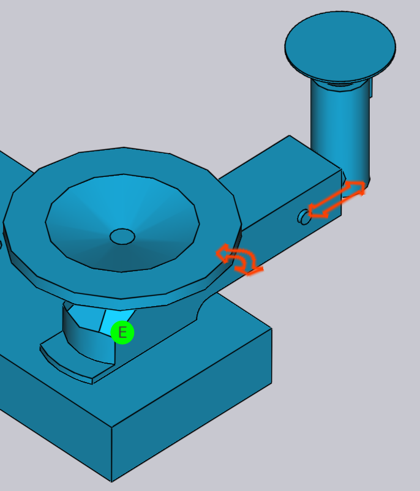

แผงสถานี RG
สถานีจับใหม่จะถูกเรียกว่า RG-Stations ใน TecZone แผง RG-Station ใช้สำหรับกำหนดค่าสถานีจับใหม่ของเครื่องเซลล์งอ
ในการเข้าถึงแผง RG-Stations:
-
คลิกลิงก์ RG-Stations จากแผง Pickup, Bend, Regrip หรือ Deposit
-
หรือคลิกโดยตรงที่สถานีจับใหม่
ขึ้นอยู่กับการดำเนินการงอและตำแหน่งของสถานี แผง RG-Stations จะแสดงตัวบ่งชี้ตัวอักษร (P, R1, #1, D, ฯลฯ) ภายในแผง


ช่องทำเครื่องหมาย Flip Part ในแผง Pickup ใช้เพื่อวาง ชิ้นงานคว่ำลงเมื่อเทียบกับตำแหน่งปัจจุบัน บางครั้งสิ่งนี้มีประโยชน์ในการหลีกเลี่ยง การชนกันระหว่างแนวหน้าแปลนที่หันลงและแขนของสถานีจับใหม่ TecZone จะคำนวณเส้นทางหุ่นยนต์ใหม่ทันทีเมื่อคุณพลิกชิ้นงาน
| เมื่อไม่ได้ใช้สถานีจับใหม่ แผงจะดูเรียบง่ายเนื่องจากตำแหน่ง ของชิ้นงานไม่สามารถควบคุมได้ (ขึ้นอยู่กับตำแหน่งการจับของชิ้นงานระหว่าง แท่นตอกและแม่พิมพ์) |
-
Stations ใช้เพื่อเลือกสถานีใดสถานีหนึ่งหรือ เพื่อปิดการใช้งานหรือเปิดใช้งานสถานีทั้งสอง

-
ใช้การตั้งค่า Positions เพื่อปรับตำแหน่ง ของสถานีบนราวเตียงเครื่องจักร ในภาพที่แสดงด้านล่าง ทางด้านซ้าย สถานีไม่ได้ถูกวางไว้ใต้ชิ้นงานตั้งแต่เริ่มต้น

หลังจากเปลี่ยนค่าในตัวเลือก Positions สถานีทั้งสอง จะถูกวางตำแหน่งเพื่อให้ถ้วยดูดของสถานี RG ถูกวาง ไว้ใต้ชิ้นงาน

การตั้งค่าในส่วน Suction ใช้สำหรับ กำหนดค่าแขนดูด
-
ใช้ตัวเลือก Type เพื่อเปลี่ยนประเภทถ้วยดูด
-
ใช้ตัวเลือก Arm เพื่อเลือกแขนดูดหนึ่งแขนหรือทั้งหมด เมื่อเลือกแล้ว แต่ละแขนจะระบุด้วยป้ายกำกับ (A, B, C, ฯลฯ)
-
ใช้การตั้งค่า Angle เพื่อหมุนแขน (เป็นขั้นๆ 5°)
-
ใช้การตั้งค่า Grid เพื่อยืด/หดแขน (เป็นขั้นๆ 10 มม.)

|
คุณยังสามารถเปลี่ยนมุมและตารางแบบโต้ตอบได้โดยการลาก แถบเลื่อนแต่ละอัน เลื่อนเมาส์ไปเหนือแขนดูดเพื่อดูแถบเลื่อนมุมและตาราง เมื่อเลือกแขน All แล้ว จะไม่สามารถเปลี่ยนมุมและตาราง แบบโต้ตอบได้ |
-
เลือก*สถานะ*การทำงานของแขนดูดเป็น off, on หรือ removed

-
หลังจากทำการตั้งค่าการดูดเสร็จสมบูรณ์ คุณสามารถใช้ตัวเลือก Copy Right เพื่อใช้การตั้งค่าเดียวกันสำหรับด้านอื่นของสถานี RG
-
ลิงก์ Prev และ Next จะแสดงหาก ชิ้นงานนี้มีการดำเนินการจับใหม่หลายรายการ และใช้สำหรับนำทาง ระหว่างพวกเขา
-
ลิงก์ Regrip R1 ใช้สำหรับแก้ไขตำแหน่งพักของชิ้นงานบน สถานีจับใหม่
ขณะที่คุณกำหนดค่าสถานีจับใหม่ใหม่ TecZone จะตรวจสอบการชนกับ ชิ้นงาน หุ่นยนต์ กริปเปอร์แบบเรียลไทม์ และอัปเดตตัวบ่งชี้ สถานะทันที